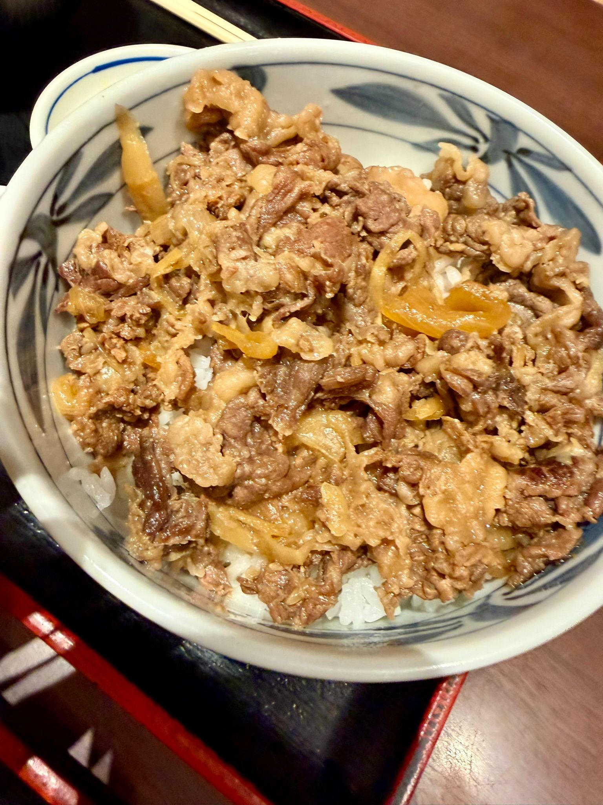
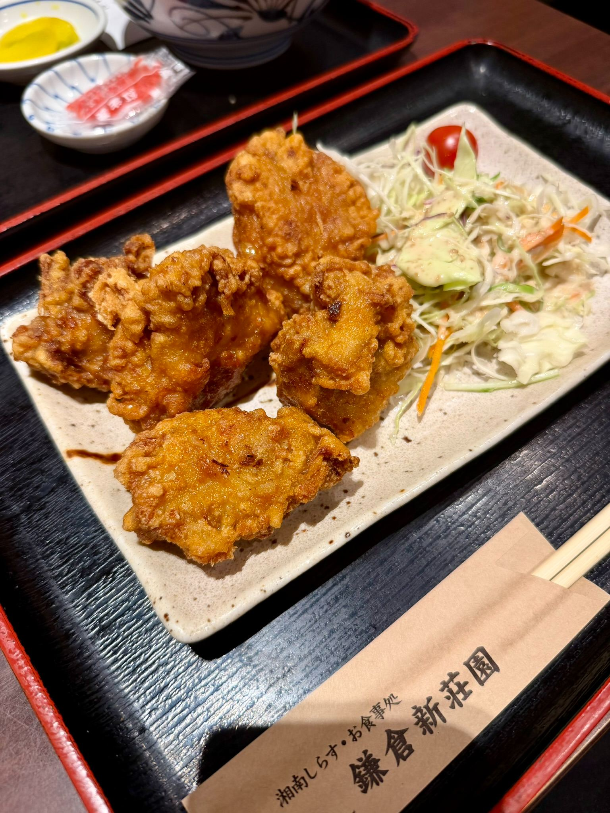
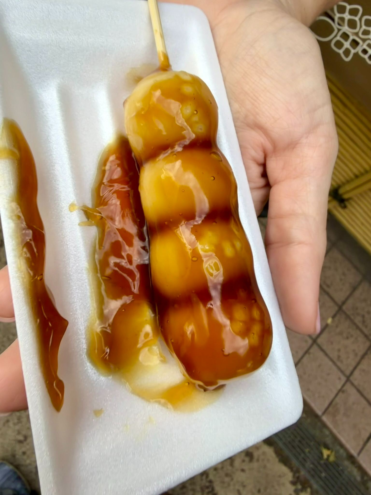

Foodie Highlights on Kamakura’s Komachi Street! 🍡🥢



If there is one thing we’ve quickly learned since making the move to Japan, it’s that snacking our way through a historic town is top-tier weekend entertainment.
We recently spent the day exploring Kamakura, and while the temples and coastal views are stunning, let’s be honest—the food on Komachi-dori (Komachi Street) stole the show! Here is a breakdown of everything we devoured on our latest adventure.
1. The Ultimate Comfort Bowl: Wagyu Gyudon 🥩
For lunch, we stepped in for something hearty at Kamakura Shinsouen.
- The Dish: A Kamakura Komachi Street exclusive—150g Wagyu Beef Bowl (Wagyu Kiwami Gyudon) for ¥1,800.
- The Experience: Tender, thin-sliced wagyu simmered with sweet onions over a bed of steamed rice. Rich, melt-in-your-mouth flavor that takes standard beef bowls to an entirely different level.
2. Crispy Perfection: Japanese Karaage 🍗
Of course, no Japanese meal is complete without a side of Japanese fried chicken (Karaage)!
- The Details: A plate of hot, golden-brown deep-fried chicken served with fresh cabbage salad and a lemon wedge for ¥900.
- The Verdict: Super crunchy on the outside, incredibly juicy on the inside, with just the right touch of citrus.
3. Sweet & Savory Street Treats: Dango
You can’t walk down Komachi Street without smelling warm, grilled rice cakes. We stopped at a street stall for some fresh dango.
- The Pick: Kuromitsu Mitarashi (Brown sugar soy sauce glazed dango) for just ¥210.
- The Verdict: Warm, chewy, perfectly sweet with that savory soy glaze drip. It’s impossible to eat cleanly, but worth every sticky finger!
Quick Tips if You Visit Komachi Street:
- Eat as you go (sort of): While street food is everywhere, remember to stand near the stall/vendor while eating rather than walking down the street—it’s local etiquette!
- Bring Yen: Many smaller street vendors prefer cash for quick ¥200–¥300 items.
Where should our taste buds take us next? Let us know your favorite spots in Kanagawa!